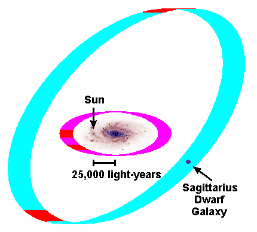

TROY, N.Y. - Heidi Jo Newberg, associate professor of physics at Rensselaer Polytechnic Institute, and Brian Yanny, an astrophysicist at Fermi National Accelerator Laboratory, who are leading a team of researchers with the Sloan Digital Sky Survey (SDSS), announced today they have identified new star structures in the halo of the Milky Way that could alter the standard model of the galaxy. The research also has implications for how the Milky Way was formed.
The
research, presented at a meeting of the American Astronomical Society
in Washington
D. C., may be a first step in the development of
complete galactic models for the halo. The star streams were
identified from positions, colors, and brightnesses of five million
stars detected in the Sloan Digital Sky Survey. The SDSS is an
international scientific collaboration which is cataloging the
heavens to an unprecedented depth, area, and accuracy.
Newberg and Yanny say the results yielded by the SDSS database provide a “deeper, more global picture of the Milky Way’s stellar system.”
An unexpectedly large number of blue stars have been found within 20 degrees of the galactic plane, say Newberg and Yanny. These stars could be part of a disrupted dwarf galaxy, or a disk-like distribution of stars that is puffier than accepted models of stellar disks in the galaxy, and flatter than the spherical distribution in the halo.
“The clumpiness of the stellar distribution in the Milky Way halo suggests that our galactic model needs to be reconsidered,” says Newberg. “Although we originally set out to measure properties of a smooth halo, we now find it difficult to determine which, if any, of the structures of the halo belong to that population.”
"Stars in the halo appear to be grouped into distinct streams in the sky," says Yanny. "A careful look at the stellar properties shows that they come from yet unidentified parent populations, perhaps other dwarf galaxies which have long since been torn apart."
Newberg and Yanny are the principal authors, along with 17 SDSS researchers, of a paper to be published by The Astrophysical Journal.
Newberg says the findings are significant because they have an impact on several active fields of astronomical research, including: galactic structure, evolution of the Milky Way, the distribution of mass in the galaxy, and galaxy formation in the early Universe.
Newberg and Yanny presented plots of color versus brightness for stars in two previously discovered, tidally disrupted structures. The distribution of stars in these plots, which indicate stellar age and metallicity, are consistent with those of the Sagittarius dwarf galaxy, but the stars are spread across 110 square degrees of sky, 75 degrees away from the center of the Sagittarius dwarf.
Newberg and Yanny have identified at least five additional overdensities of stars in the galactic halo. Four of these may be pieces of the same halo structure, which would cover a region of the sky at least 40 degrees across, at a distance of 11 kpc (36,000 light years) from the sun which is18 kpc, or 60,000 light years from the center of the galaxy. For reference, the Sun is 25,000 light years from the center of the galaxy.
“It is striking that in this direction in the sky all the stars appear to be at the same distance,” said Connie Rockosi, a researcher at the University of Washington, who initially found the group of blue stars. “This suggests that our galaxy might be encircled by a narrow ring of stars, possibly the result of a dwarf satellite galaxy disruption.”
The paper, titled "Halo Streams and Milky Way Components from the Sloan Digital Sky Survey," can be found at http://xxx.lanl.gov/abs/astro-ph/0111095
For more information contact: Dr. Heidi J. Newberg (518) 276-2652 or newbeh@rpi.edu
Dr. Brian Yanny (630) 840-4413 or yanny@fnal.gov.
An image of the disk of a spiral galaxy like the Milky Way is shown as
if one could step outside the Galaxy and view it from a great
distance. The Galactic Center (GC) is marked with a faint open blue
circle and the Sun's location is labeled by an orange dot.
The magenta ring at radius 18 kpc (60,000 light years) from the
Galaxy's center shows the proposed extrapolated location of a 'ring'
or 'metal-weak thick disk' component of Galactic structure. Areas
where the Sloan Digital Sky Survey (SDSS) has observed the structure
are indicated in red.
The sky blue ring at greater distance (115,000 light years from the
GC) shows possible locations for the tidal debris of stars from a
small dwarf galaxy in the Sagittarius constellation, as they are
stripped by the Galaxy's gravitational forces. The remaining nucleus
of Sagittarius is indicated in dark blue. The red regions of the ring
show where the stellar populations of individual tidal stars have been
detected in the SDSS. Stars in these regions have been confirmed to be
of similar age and metalicity to those in the Sagittarius dwarf
itself.
Sloan
Digital Sky Survey Funding
for the creation and distribution of the SDSS Archive has been
provided by the Alfred P. Sloan Foundation, the participating
institutions, the National Aeronautics and Space Administration, the
National Science Foundation, the U.S. Department of Energy, the
Japanese Monbukagakusho, and the Max Planck Society. The
participating institutions are The University of Chicago, Fermilab,
the Institute for Advanced Study, the Japan Participation Group, The
Johns Hopkins University, the Max-Planck-Institute for Astronomy
(MPIA), the Max-Planck-Institute for Astrophysics (MPA), New Mexico
State University, Princeton University, the United States Naval
Observatory, and the University of Washington. For further
information, consult the SDSS Web site at http://www.sdss.org/. Rensselaer
Polytechnic Institute, founded in 1824, is the nation's oldest
technological university. The school offers degrees in engineering,
the sciences, information technology, architecture, management, and
the humanities and social sciences. Institute programs serve
undergraduates, graduate students, and working professionals around
the world. Rensselaer faculty are known for pre-eminence in research
conducted in a wide range of research centers that are characterized
by strong industry partnerships. The Institute is especially well
known for its success in the transfer of technology from the
laboratory to the marketplace so that new discoveries and inventions
benefit human life, protect the environment, and strengthen economic
development.

Rensselaer Polytechnic Institute